Captain
A compact C patch. The letter carries the meaning; the shield gives it a baseball uniform character.
Captain SVG ↓Familiar faces. Expressive game symbols. Clear everyday controls. A shared set of marks for Mario Baseball, built on v3.
Portraits identify characters. Team emblems identify teams. Their original silhouettes carry the personality.


Consistent space around each portrait. No new colored badge behind every face.


Keep each emblem’s outline. Team identity stays separate from character status.
Balance, Power, Speed, Technique. The game uses text labels; Rio keeps that directness, with a compact, slightly leaning wordmark.
One neutral treatment across all four classes. The class name remains readable without a color key.
Batting, pitching, running and fielding share a simple object language. Recognizable at a glance, compact enough to sit beside the number.
64px marks above; 32px beside the stats. The number and bar express strength. The symbol identifies the attribute.
Fourteen new pictograms for the existing abilities. Shared baseballs, gloves and motion strokes connect the set; the action gives each its silhouette.
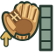
ClamberA glove reaching up a wall. Download SVGWall JumpA cleat pushing off the wall. Download SVGSuper JumpA raised cleat and upward motion. Download SVGSliding CatchA low glove reaching through a slide. Download SVG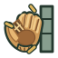
Wall SplatA glove pressed against the wall. Download SVGBall DashA cleat, carried ball and trailing motion. Download SVGSuper CatchThe ball held inside an open glove. Download SVGMagical CatchA baseball surrounded by sparks. Download SVGTongue CatchA curling tongue wrapping the ball. Download SVG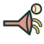
SuctionA flared mouth drawing in a baseball. Download SVGLaserA baseball on a sharp, straight beam. Download SVGQuick ThrowA quick release with two short trails. Download SVGSuper CurveA baseball following a deep hook. Download SVGBody CheckTwo shoulders meeting at impact. Download SVGNames stay attached. These are new interface illustrations, not recovered game icons. At very small sizes, use the ability name on its own.
Trace a hit around the bases. Clear the wall. Connect two outs. Each mark captures the result, with the name and familiar scoring shorthand alongside it.
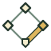
SingleOne base along the path. Download SVG2B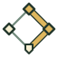
DoubleThe path continues to second. Download SVG3BTripleThree sides of the diamond. Download SVGHRHome runThe ball clears the outfield wall. Download SVGBB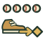
WalkFour balls and a step to first. Download SVGKStrikeoutA bold K, built as a shape. Download SVGGO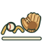
GroundoutA bouncing ball meets the glove. Download SVGFO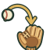
FlyoutA high arc drops into the glove. Download SVGDP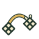
Double playA connected throw and two out marks. Download SVGCSCaught stealingThe tag meets the runner at the bag. Download SVGA single, double and triple have different path lengths, not just different colors. K covers a strikeout without guessing whether the batter swung. DP and CS retain their text labels.
Keep these marks beside results and result counts. Chemistry symbols remain relationship indicators; the gold star remains Superstar status.
A compact C patch. The letter carries the meaning; the shield gives it a baseball uniform character.
Captain SVG ↓A warm gold star reserved for Superstar status. Standard characters use a plain text label.
Superstar SVG ↓A neutral check and a clear rim. Selection stays distinct from character class, chemistry and star status.
INTERFACE STATE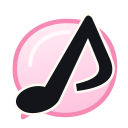
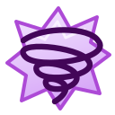
Pink note for chemistry. Purple spiral for anti-chemistry. These symbols keep their specific meaning.
Open chemistry study ↗Simple, rounded strokes for everyday actions. Neutral color, familiar shapes, and text wherever the meaning needs help.
24px artwork, 1.8px strokes. Interactive targets should be at least 44px. Each sample downloads its icon; it does not perform the pictured action.
Existing roster information, arranged as compact design samples. Portrait first, class second, abilities alongside their names.
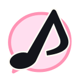
Chemistry with LuigiStandardExisting portraits and roster fields; ability assignments checked against the original character records. These are visual samples, not new product features.